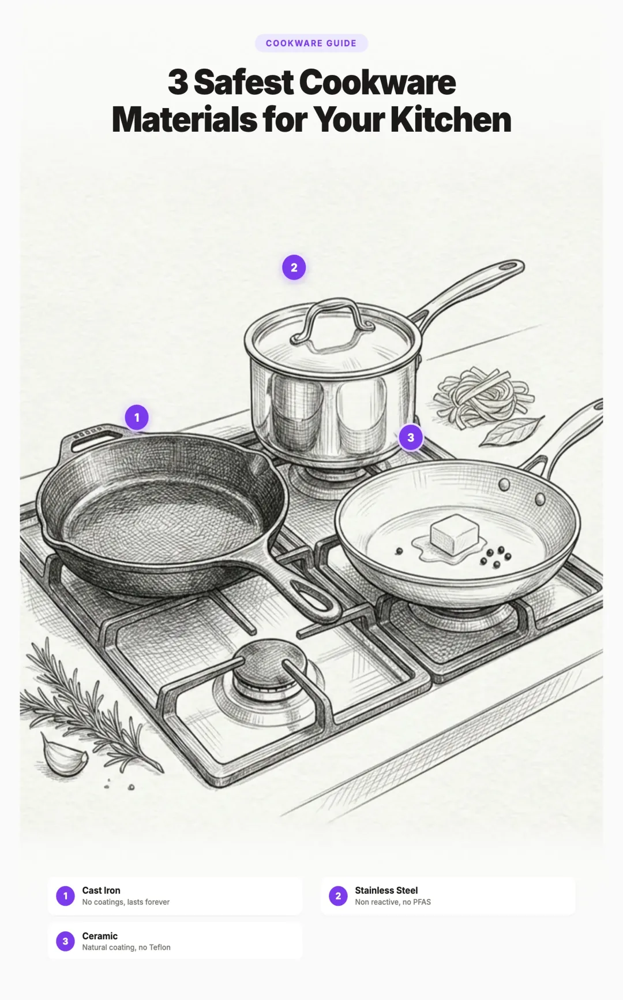

Cast Iron vs Stainless Steel vs Ceramic Cookware: The Complete 2026 Comparison

1. Why Switch From Non Stick Cookware?
Traditional non stick cookware uses PTFE (Teflon) coatings that contain PFAS, a class of over 14,000 synthetic chemicals known as "forever chemicals." They are called that because they do not break down in the environment or in your body.
When non stick pans are heated above 260°C (500°F), the coating breaks down and releases PFAS molecules into the air you breathe and the food you eat. Even at normal cooking temperatures, scratched or worn coatings release PFAS particles directly into your meals.
The good news: there are four excellent PFAS free alternatives that professional chefs have used for centuries. Each has different strengths, and the best one for you depends on how you cook. If you are new to reducing plastic and chemical exposure, our beginner guide to reducing plastic exposure explains why cookware is one of the top priorities.
2. PFAS Bans Are Accelerating in 2026
The regulatory landscape has shifted dramatically. Multiple U.S. states have now banned PFAS in cookware:
| State | Ban Effective | Status |
|---|---|---|
| Minnesota | January 2025 | |
| Colorado | January 2026 | |
| Maine | January 2026 | |
| Illinois | January 2026 | |
| Connecticut | January 2026 | |
| Vermont | January 2026 | |
| California | 2026 (phased) | |
| Missouri | January 2027 | |
| Kansas | January 2027 |
As of March 2026, nearly 100 PFAS bills have been introduced across 23 states, with an additional 280 bills carried over from 2025. The writing is on the wall. Even if your state has not banned PFAS cookware yet, switching now means you stop the exposure today.
3. The Four PFAS Free Materials
Every material below is 100% free of PFAS, PTFE, and synthetic coatings. They have been used safely for hundreds (in some cases thousands) of years. Here is a quick overview before we go deep on each one.
4. Safety and Chemical Leaching
Let's be clear upfront: all four materials are safe for everyday cooking. None contain PFAS, PTFE, or synthetic coatings. The differences in leaching are minor and well within safe limits for the general population. Here is what the science says about each.
Cast Iron
Cast iron leaches small amounts of dietary iron into food, especially when cooking acidic ingredients like tomato sauce. This can add 1 to 2 mg of iron per serving. For most people this is actually a benefit, especially for those with low iron levels. The only group that should be cautious is people with hemochromatosis (iron overload disorder).
Stainless Steel
Research published in the Journal of Agricultural and Food Chemistry found that cooking tomato sauce in stainless steel increased nickel and chromium concentrations. However, the amounts decreased significantly after the first several uses, and for the general population they remain well below known health thresholds. If you have a nickel allergy, choose nickel free 18/0 stainless steel instead of the standard 18/10 grade. You can also "condition" new stainless steel by boiling water in it several times before your first meal.
Carbon Steel
Similar to cast iron, carbon steel may leach small amounts of dietary iron. It does not contain nickel or chromium, so there is no concern about those metals. The seasoning layer also reduces direct contact between the metal and your food.
Pure Ceramic
Pure ceramic cookware (like Xtrema) is made entirely from clay and natural minerals fired in a kiln. Independent lab testing confirms it does not leach lead, cadmium, metals, polymers, dyes, or PFAS. It is the only cookware material that has zero interaction with food of any kind.
| Material | What It Leaches | Risk Level |
|---|---|---|
| Cast Iron | Dietary iron (1-2 mg/serving) | |
| Stainless Steel | Trace nickel and chromium | |
| Carbon Steel | Dietary iron (similar to cast iron) | |
| Pure Ceramic | Nothing | |
| Teflon/PTFE | PFAS forever chemicals |
5. Head to Head Comparison
| Feature | Cast Iron | Stainless | Carbon Steel | Ceramic |
|---|---|---|---|---|
| Non Stick | ||||
| Heat Retention | ||||
| Heat Response | ||||
| Acidic Foods | ||||
| Weight | ||||
| Maintenance | ||||
| Dishwasher Safe | ||||
| Induction | ||||
| Oven Safe | ||||
| Microwave | ||||
| Durability |
6. Best Material for Each Cooking Style
No single material is perfect for everything. Here is what each one does best.
Cast Iron: The Searing and Baking Champion
Nothing beats cast iron for searing steaks, baking cornbread, making skillet desserts, and deep frying (it holds oil temperature steady). Once well seasoned, it becomes naturally non stick and gets better with every use.
- Searing meats
- Baking (cornbread, pizza)
- Deep frying
- Campfire cooking
- Tomato sauces
- Wine reductions
- Citrus dishes
- Delicate fish (if unseasoned)
Stainless Steel: The Kitchen Workhorse
Stainless steel is the most versatile single material you can own. It handles acidic foods beautifully, builds excellent fond for pan sauces, and goes straight into the dishwasher. Professional kitchens run on stainless steel for a reason.
- Tomato sauces and wine reductions
- Deglazing and pan sauces
- Boiling and simmering
- Everyday versatility
- Eggs (without proper technique)
- Low fat cooking
- Delicate foods that stick easily
Carbon Steel: The Chef's Secret Weapon
Carbon steel is what French chefs reach for when cast iron is too heavy and stainless steel is too sticky. It is half the weight of cast iron, heats up in seconds, and develops the same natural non stick seasoning. It is also the go to material for wok cooking and stir frying.
- Stir frying and wok cooking
- High heat searing
- Crepes and omelettes
- Quick temperature changes
- Acidic foods (strips seasoning)
- Long simmered sauces
- Slow cooking
Pure Ceramic: The Purest Cooking Surface
If your top priority is a cooking surface that has zero interaction with food, pure ceramic is the only option that achieves this. It is completely non reactive with every food type, safe at any temperature, and goes from stovetop to oven to microwave to dishwasher. Brands like Xtrema make 100% solid ceramic cookware with independent lab testing to prove it.
- Acidic food cooking
- Slow cooking and braising
- Baking and roasting
- People who want zero leaching
- High heat searing
- Situations where you might drop it
- Induction cooktops
7. Durability and Longevity
Durability is the hidden cost of cookware. A $25 cast iron skillet that lasts 100 years is dramatically cheaper per year than a $50 non stick pan you replace every 2 years.
Cast iron is the durability champion. Some skillets in use today were made over 100 years ago and still perform perfectly. A well cared for cast iron or carbon steel pan can be passed down through generations.
Stainless steel is extremely durable too, resistant to chips, cracks, and corrosion. Many brands offer lifetime warranties because the product genuinely lasts that long.
Pure ceramic is more fragile than metal cookware. It can crack, chip, or break if dropped, and it is vulnerable to thermal shock (going from extreme hot to extreme cold). With careful handling though, it lasts 5 to 10 years or more.
8. Care and Maintenance
Cast Iron and Carbon Steel
These two share nearly identical care routines:
- Season before first use. Apply a thin coat of high smoke point oil (avocado, canola, or grapeseed) and bake upside down at 450°F for one hour. Flaxseed oil is sometimes recommended, but it can flake over time. Canola and grapeseed tend to produce a more durable seasoning layer.
- Clean while still warm. Wipe with a paper towel for light messes. Use coarse kosher salt as a gentle abrasive for stuck food.
- Modern dish soap is fine. The old advice to never use soap is outdated. Today's mild dish soap will not strip your seasoning.
- Dry immediately and thoroughly. A brief stovetop heating helps evaporate any remaining moisture.
- Apply a thin coat of oil after each cleaning to maintain the seasoning layer.
- Never soak in water and never put in the dishwasher.
Stainless Steel
The lowest maintenance option:
- No seasoning required, ever.
- Dishwasher safe (hand washing preserves the polished appearance).
- Bar Keeper's Friend removes any discoloration or water spots.
- Preheat the pan before adding oil to reduce food sticking.
Pure Ceramic
Low maintenance but requires careful handling:
- No seasoning required.
- Dishwasher safe.
- Use non abrasive cleaners. Avoid steel wool.
- Allow it to cool gradually. Never run cold water on a hot ceramic pan.
- Heat gradually. Do not place cold ceramic directly on a hot burner.
- Handle with care to avoid chipping or cracking.
9. Price Comparison
| Material | Budget | Mid Range | Premium |
|---|---|---|---|
| Cast Iron | $25 - $40 (Lodge) | $40 - $80 (Victoria) | $150 - $400 (Smithey, Le Creuset). Note: Le Creuset is enameled cast iron, not bare cast iron. Enameled cast iron has a vitreous enamel coating, so it requires no seasoning and does not leach iron into food. |
| Stainless Steel | $30 - $80 (Tramontina) | $80 - $160 (Made In) | $160 - $400 (All Clad, Demeyere) |
| Carbon Steel | $25 - $50 (Lodge, Matfer) | $50 - $100 (de Buyer) | $100 - $200 (Blu Skillet) |
| Pure Ceramic | $80 - $200 per piece (Xtrema) | $250 - $500 (sets) | |
When comparing price, always consider the cost per year of use. A $25 Lodge cast iron skillet used for 50 years costs you $0.50 per year. A $50 non stick pan replaced every 3 years costs $16.67 per year. The "expensive" option is almost always cheaper in the long run.
While you are upgrading your cookware, consider swapping your plastic cutting boards too. Plastic boards shed millions of microplastic particles into your food every year, and a wood or bamboo board eliminates that entirely. You should also look at your food storage containers since plastic containers leach chemicals into food, especially when heated.
10. Environmental Impact
The most sustainable cookware is the one you never have to replace. Here is how each material stacks up.
Cast iron and carbon steel require high energy for manufacturing (smelting iron ore), but their lifetime durability means one pan replaces potentially dozens of non stick pans over the same period. Both are fully recyclable. Carbon steel has a slight edge due to lower manufacturing energy (thinner material) and lighter shipping weight.
Stainless steel has environmental concerns around nickel and chromium mining, but 20 to 50+ year lifespans offset this significantly. Stainless steel is one of the most recycled materials on the planet.
Pure ceramic is made from natural materials (clay, minerals) with lower manufacturing temperatures than metal smelting. Its shorter lifespan compared to metal cookware is the main drawback, but it is still far better than disposable non stick pans.
Teflon and non stick cookware has the worst environmental profile. PFAS are literally called forever chemicals because they never break down. Short lifespans mean constant waste. They cannot be recycled. Manufacturing produces PFAS pollution that contaminates water supplies. If you are concerned about PFAS in your water, our guide on removing microplastics from drinking water covers which filters also remove PFAS.
11. Common Mistakes When Switching to PFAS Free Cookware
Switching from non stick to PFAS free cookware is one of the best things you can do for your health, but there are a few mistakes that trip people up. Avoiding these will make the transition smoother and help your new cookware last longer.
1. Not preheating the pan
The number one reason food sticks to stainless steel is putting food into a cold pan. Always preheat your stainless steel pan for 2 to 3 minutes on medium heat before adding oil. When the oil shimmers and flows easily, the pan is ready. This creates a temporary non stick effect that works every time.
2. Using too much heat on cast iron
Cast iron retains heat extremely well, so you rarely need to go above medium. Cranking the heat to high will cause food to burn and stick. Start lower than you think you need to and give the pan time to come up to temperature evenly.
3. Buying ceramic coated instead of pure ceramic
Many products are marketed as "ceramic cookware" when they are actually aluminum pans with a thin ceramic coating. This coating degrades in 1 to 3 years and you are back to square one. If you want true ceramic, look for brands like Xtrema that make 100% solid ceramic cookware with no metal core at all.
4. Skipping the seasoning step
Cast iron and carbon steel need to be seasoned before first use. This is not optional. Without a proper seasoning layer, food will stick and the pan will rust. The good news is that it takes about an hour and only needs to be done once. After that, regular cooking builds up the seasoning naturally.
5. Putting cast iron or carbon steel in the dishwasher
Dishwashers strip the seasoning layer from cast iron and carbon steel, leaving them vulnerable to rust. Always hand wash these pans with warm water and a gentle scrub. A small amount of mild dish soap is fine despite what some people claim.
6. Replacing everything at once
You do not need to throw away all your cookware in one day. Start with the pan you use most often and replace it first. For most people, that is a 12 inch skillet. A single Lodge cast iron skillet or Tramontina stainless steel pan will handle 80% of your cooking. Add more pieces over time as your budget allows.
7. Expecting the same behavior as non stick
PFAS free cookware cooks differently and that is a good thing. Food browning on stainless steel creates fond, the flavorful base for pan sauces. Cast iron builds a natural patina that gets more non stick with every use. Give yourself a few weeks to adjust your technique and you will wonder why you ever used Teflon.
12. Our Recommendation
There is no single "best" cookware material. The right choice depends on your priorities. Here is our recommendation based on what matters most to you.
| If Your Priority Is... | Choose This |
|---|---|
| Absolute safety, zero leaching | Pure Ceramic (Xtrema) |
| Versatility and low maintenance | Stainless Steel (tri ply clad) |
| Best sear and natural non stick | Cast Iron |
| Lightweight performance | Carbon Steel |
| Cooking acidic foods regularly | Stainless Steel or Pure Ceramic |
| Best value for money | Cast Iron ($25 for a lifetime pan) |
| Environmental sustainability | Cast Iron or Carbon Steel |
| Easiest cleanup | Stainless Steel (dishwasher safe) |
Our practical suggestion: start with two pans. A Lodge cast iron skillet ($25) for searing and baking, and a Tramontina tri ply stainless steel pan ($35) for everything else. That is $60 total for two pans that will last you a lifetime, replace all non stick cookware in your kitchen, and eliminate your PFAS exposure from cooking.
If budget allows, add a de Buyer carbon steel pan ($50) for stir frying and high heat work. And if you want the purest cooking surface available, Xtrema pure ceramic is the gold standard for zero leaching.
You can find all of these products compared side by side in our Clean Cookware section.
13. Frequently Asked Questions
Yes. Cast iron is one of the safest cookware materials available. It contains no PFAS, coatings, or synthetic chemicals. It does leach small amounts of dietary iron into food, which is generally considered beneficial. People with hemochromatosis (iron overload) should consult their doctor.
Stainless steel can leach trace amounts of nickel and chromium, especially when cooking acidic foods like tomato sauce. The amounts are well within safe limits for most people. If you have a nickel allergy, choose nickel free 18/0 stainless steel instead of the standard 18/10 grade.
Pure ceramic cookware (like Xtrema) is made entirely from clay and natural minerals fired in a kiln. Ceramic coated cookware has a metal core (usually aluminum) with a thin ceramic coating that wears off in 1 to 3 years. Pure ceramic leaches nothing into food. Ceramic coated pans may expose the metal underneath as the coating degrades.
Cast iron lasts the longest, often 100+ years and can be passed down through generations. Stainless steel and carbon steel also last a lifetime with proper care. Pure ceramic lasts 5 to 10+ years but is more fragile. Teflon and ceramic coated pans typically last only 1 to 5 years.
As of 2026, several U.S. states have banned PFAS in cookware including Minnesota (2025), Colorado, Maine, Illinois, Connecticut, and Vermont (all 2026). Missouri and Kansas bans take effect in 2027. California has also voted to phase out forever chemicals in cookware. There is no federal ban yet.
All four PFAS free options (cast iron, stainless steel, carbon steel, and pure ceramic) are safe. Pure ceramic has zero leaching of any kind. Cast iron and carbon steel leach beneficial iron. Stainless steel leaches trace nickel and chromium within safe limits. The best choice depends on your cooking style and priorities.
Yes. Cast iron, stainless steel, and carbon steel all work on induction cooktops. Pure ceramic does not work on induction because it contains no magnetic metal.
Yes, but it is easier than it sounds. Apply a thin coat of oil and bake at 450°F for one hour. After that, regular cooking and a light oiling after each wash will maintain the seasoning naturally. Many cast iron pans also come pre seasoned out of the box.
Preheat the empty pan on medium heat for 2 to 3 minutes. Add oil and wait until it shimmers and moves fluidly across the surface. Then add your food. This creates a temporary non stick layer. Also make sure your food is dry and at room temperature before placing it in the pan. Cold, wet food dropped into a pan is the most common cause of sticking.
Briefly cooking acidic foods like tomatoes in well seasoned cast iron is fine. However, long simmering acidic dishes (like a tomato sauce for 30+ minutes) can strip the seasoning and give food a metallic taste. For long cooked acidic recipes, use stainless steel or pure ceramic instead.
PFAS in Cookware: State by State Regulations (BCLP)
State PFAS Legislation in 2026 (MultiState)
UNC Study: Cookware Contributes to PFAS Exposure (NC Health News)
How Does Nonstick Cookware Work? (American Chemical Society)
State PFAS Laws Taking Effect in 2026 (Manufacturing Dive)
Ceramic vs Ceramic Coated Cookware (Xtrema)
Assessing Leaching of Potentially Hazardous Elements from Cookware (PMC)
Related Articles
- Best Plastic Free Food Storage Containers
Glass, stainless steel, and silicone containers compared for safety and durability. - Best Non Toxic Cutting Boards
Wood, bamboo, and rubber alternatives that keep microplastics off your plate. - How to Avoid BPA and Phthalates in Everyday Products
A room by room guide to reducing harmful chemical exposure at home. - How to Start Reducing Plastic Exposure
A practical priority guide for reducing plastic in your daily routine.